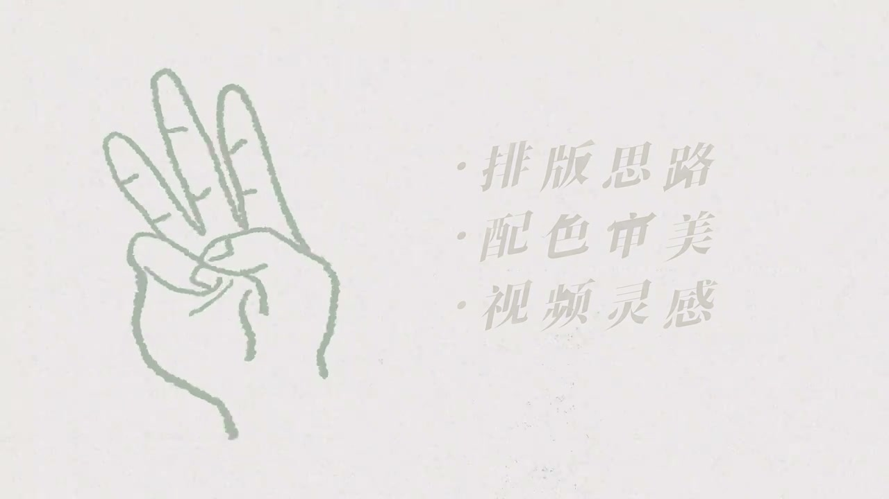
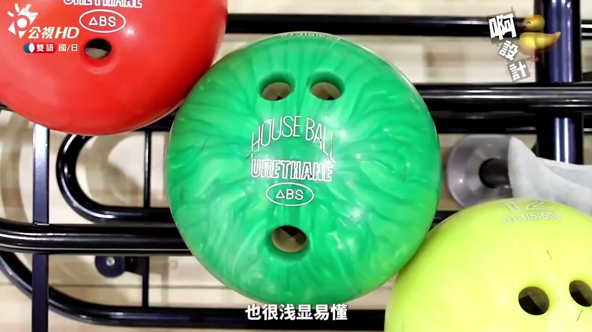

开场与困境：Hi朋友们，您有没有过这…
Opening and the struggle: hi friends, ever…
情境排版和文字设计决定视频质感。
01
中文怎么有点土啊。到底字应该放在画面的哪里？应该用什么字体？
EN
It looks tacky. Where should text go? Which font?
表达提示where to put text（字放哪里）
02
中文往往因为视频排版和文字设计，让自己的视频没有别人那么有质感。
EN
Layout and typography make videos less polished than others'.
表达提示polish matters（质感差距）
03
中文分享给大家三种能够提升排版思路的渠道，保证看到就能马上用上。
EN
Three channels to improve layout thinking—usable right away.
表达提示three channels（三个渠道）
Paraphrase & Chunks 2 组表达
where to put text（字放哪里
where to put text（字放哪里
polish matters（质感差距
polish matters（质感差距
渠道一：设计类节目与纪录片：说到文字…
Channel one: design shows and documentarie…
情境日本设计节目和平面设计纪录片启发排版。
01
EN
In 1 minute 20 seconds it explains basic text layout.
表达提示basic layout（基础排版）
02
中文《啊！设计》还用各种有趣的方式展现了各种生活物品的设计原理。
EN
Design Ah! shows design principles of everyday objects in fun ways.
表达提示design principles（设计原理）
03
中文《平面之道》讲的是数字时代之前的平面设计制作的演变史。
EN
Graphic Means covers graphic design's evolution before the digital age.
表达提示design history（设计演变史）
Paraphrase & Chunks 2 组表达
basic layout（基础排版
basic layout（基础排版
design principles（设计原理
design principles（设计原理

渠道二：手机App的UI：第二种想推…
Channel two: phone app UIs: the second cha…
情境App UI是每天都在看的排版教材。
01
中文UI设计往往是用最简洁的方法去匹配用户的视觉逻辑。
EN
UI design matches user visual logic in the simplest way.
表达提示simple UI logic（简洁视觉逻辑）
02
中文给预览区加浅灰色底的方法，这样进行分割区块也不会让画面太乱。
EN
A light-gray preview backdrop splits blocks without clutter.
表达提示light-gray base（浅灰底色）
03
中文减少页面中过多的形状，让页面不会被太多区块分割，也带到了简洁的观感。
EN
Fewer shapes and blocks give a cleaner look.
表达提示fewer blocks（减少分割）
Paraphrase & Chunks 2 组表达
simple UI logic（简洁视觉逻辑
simple UI logic（简洁视觉逻辑
light-gray base（浅灰底色
light-gray base（浅灰底色

渠道三：实体杂志与结语：除了剪映之外…
Channel three: print magazines and conclus…
情境中文设计杂志BRAND专题式学排版。
01
中文可以在更新前把界面截图保存一下，尝试去分析一些设计细节。
EN
Screenshot favorite app UIs before updates and analyze the details.
表达提示screenshot UIs（截图分析）
02
中文《BRAND》每一期都会聚焦于一个专题，可以更系统地学习设计知识。
EN
Each BRAND issue focuses on one topic—systematic design learning.
表达提示topic-based（专题聚焦）
03
中文这是比较少有的中文设计杂志，终于不用只看图了。
EN
One of the few Chinese design magazines—not just pictures.
表达提示Chinese magazine（中文杂志）
Paraphrase & Chunks 2 组表达
screenshot UIs（截图分析
screenshot UIs（截图分析
topic-based（专题聚焦
topic-based（专题聚焦
今日可练 PRACTICE TODAY
说排版困境
Text placement and fonts often ruin an otherwise great vlog.
说渠道一节目纪录片
Design shows and Graphic Means teach layout basics.
说渠道二App UI
Analyze app UIs for layout and sectioning ideas.
说UI细节迁移
Light-gray bases and fewer blocks create clean looks.
说渠道三BRAND杂志
A topic-based Chinese design magazine teaches systematically.
避坑 PITFALLS
✕ Add text at random positions.
✓ Learn layout logic from shows and apps.
文字乱放显土。
✕ Use pure white on busy frames.
✓ Add a shadow or a base tone for readability.
纯白看不清。
✕ Over-decorate with shapes.
✓ Fewer blocks and shapes read cleaner.
过多装饰更乱。
✕ Learn design only from scattered sites.
✓ Use topic-focused magazines for system.
零碎信息不如专题学习。
✕ Fear analyzing UI without training.
✓ Screenshot and analyze—you'll learn from volume.
分析多了总能学到。
认知转变 MINDSET SHIFTS
说排版只会说 layout→用 typography（文字排版）、block division（区块分割）、visual logic（视觉逻辑）说审美只会说 taste→用 color palette（配色）、design principles（设计原理）、layout basics（基础排版）说学习只会说 learn→用 topic-focused（专题聚焦）、screenshot analysis（截图分析）、systematic design（系统设计）